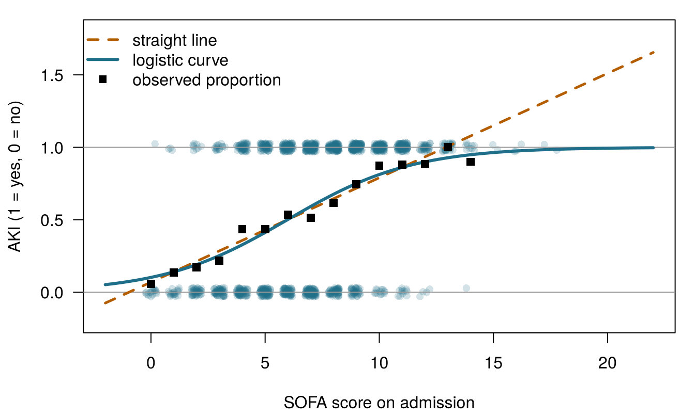
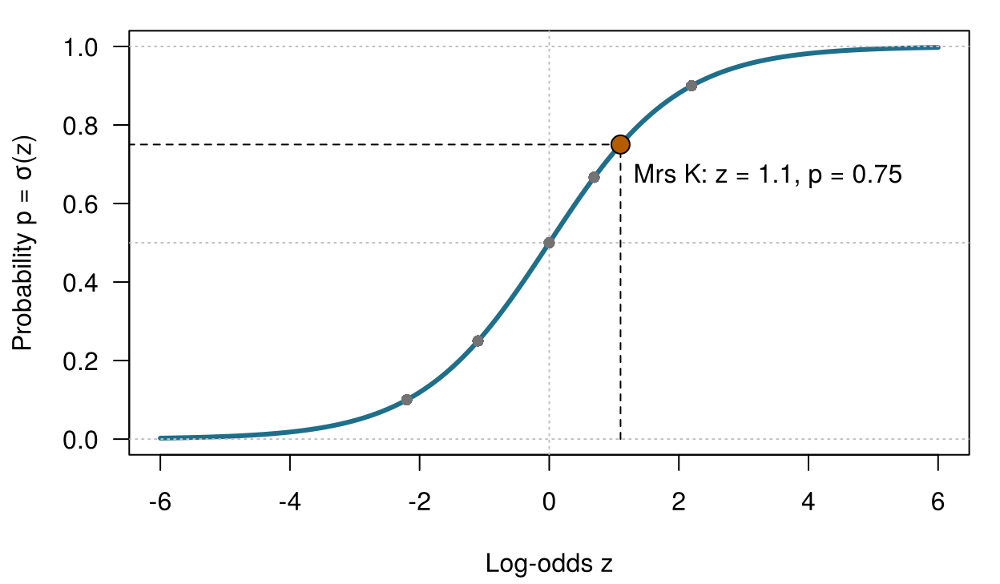
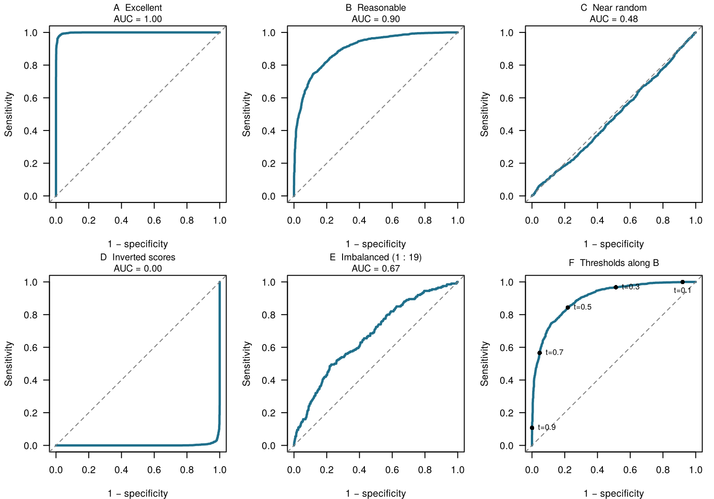
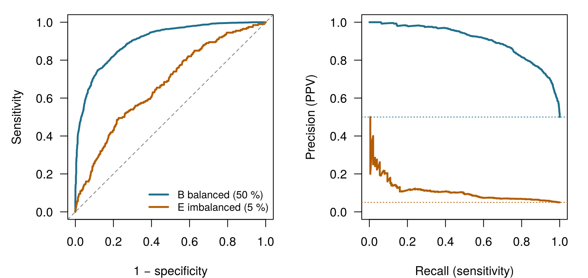
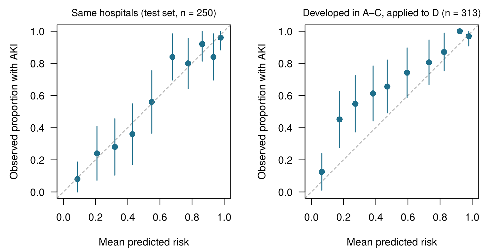

5 Classification, thresholds and calibration
Four questions to warm up. Take your best guess: every one of them is answered in the chapter.
| Question | Your answer |
|---|---|
| A probability of 0.75 corresponds to odds of … (type a number) | |
| Odds of 1 ("even odds") correspond to a probability of … (type a number) | |
| The flag fires when the predicted risk is above a threshold. Who should choose the threshold? | |
| A model gives 30 % to a group of 100 patients. It is well calibrated if … |
How to use this chapter
Starting here?
This chapter borrows a few ideas from earlier chapters. In brief:
- Decision threshold (Section 1.5). In Chapter 1 the Ward 7 team compared the expected value of starting a kidney-protective bundle with that of standard care. With their scores, the bundle was the better choice whenever the probability of AKI was above 0.25: the threshold.
- Train and test sets (Section 1.8, Definition 1.9). A model is judged on patients who were not used to build it; choices made while building it are judged by cross-validation. Chapter 3 turns this into a routine and warns about leakage, information about the outcome sneaking into the predictors.
- Sensitivity, specificity, PPV and NPV (Chapter 2). For a yes/no test, sensitivity is the proportion of people with the condition who test positive, specificity the proportion without it who test negative, and the positive (negative) predictive value the proportion of positive (negative) results that are correct. Predictive values depend on prevalence; sensitivity and specificity do not.
- Likelihood and expected loss (Chapter 2). The likelihood measures how probable the observed data are under given parameter values; maximum likelihood picks the values that make the data most probable. Expected loss weighs each possible error by its probability.
- Linear regression, coefficients, ridge and lasso (Chapter 4). A linear model predicts \(\hat y = \beta_0 + \beta_1 x_1 + \dots + \beta_p x_p\); penalties shrink the coefficients to fight overfitting.
| Example | Who or what | Outcome | Faces you will meet |
|---|---|---|---|
| 1 Ward 7 ICU | 1 250 ICU patients in 4 hospitals | change in creatinine over 48 h (acute kidney injury if ≥ 0.3 mg/dL) | Aoife (71, sepsis, borderline risk), Tomás (54, low risk), Priya (38, high risk); Dr Emma Walsh; Seán, the pharmacist |
| 2 ONCO-1 trial | 1 000 patients randomised to chemotherapy or not | tumour shrinkage (%) | patients #0042 and #0917 |
| 3 HomeBeat | 500 people wearing a smartwatch at home | stress score, deterioration event | Lena |
| 4 CellWorks | 420 production batches of a cell therapy | potency score | batch CW-118 |
All four datasets are simulated and can be downloaded from the data appendix. The full introduction is in Section 1.1.
This chapter turns a model’s output into a decision. You will meet the logistic model, the language of odds, and the tools for judging a classifier: the confusion matrix, ROC and precision–recall curves, calibration and decision curves. It has thirteen sections and a Lab, seven quick checks, three “Try it” widgets, a challenge and three coding missions in R and Python. Allow about two hours.
Notation at a glance (for lookup only)
| Symbol | Meaning | Section |
|---|---|---|
| \(p\), \(\hat p\) | probability of the event (here AKI), and its estimate from a model | Section 5.2 |
| \(z\) | linear predictor \(\beta_0 + \beta_1 x_1 + \dots + \beta_p x_p\), on the log-odds scale | Section 5.3 |
| \(\sigma(z)\) | logistic (sigmoid) function \(1/(1+e^{-z})\) | Section 5.3 |
| \(\beta_j\), \(e^{\beta_j}\) | coefficient of feature \(j\), and its odds ratio | Section 5.4 |
| \(t\) | classification threshold | Section 5.6 |
| TP, FP, FN, TN | true positives, false positives, false negatives, true negatives | Section 5.6 |
| \(C_{\text{FP}}\), \(C_{\text{FN}}\) | harm of a false positive, of a false negative | Section 5.9 |
| NB\((t)\) | net benefit at threshold \(t\) | Section 5.11 |
In this chapter \(p\) is a probability. Elsewhere in the book \(p\) also counts features; the context always makes clear which is meant. The full list is on the notation page.
5.1 From numbers to yes or no
In Chapters 1 and 4 the Ward 7 outcome was a number: the change in creatinine over 48 hours. But Emma does not act on a number; she acts on a question with two answers. Will Aoife develop AKI? By the KDIGO criterion, AKI means a rise of at least 0.3 mg/dL within 48 hours (Kidney Disease: Improving Global Outcomes (KDIGO) Acute Kidney Injury Work Group 2012), so we can turn each past patient’s record into a binary outcome: \(y_i = 1\) if patient \(i\) developed AKI and \(y_i = 0\) otherwise. Of the 1 250 past patients, 58 % did.
Predicting a category rather than a number is called classification. A classifier can return a label (“AKI” or “no AKI”), but the useful ones return a probability, \(\hat p\), and leave the label to a later step. This chapter is about both steps: how to estimate \(\hat p\), and how to turn it into a decision.
Why not simply use the linear regression of Chapter 4, with \(y\) coded 0 and 1? This is called the linear probability model, and Figure 5.1 shows its problem. The straight line fitted to AKI (0/1) against SOFA happily predicts “probabilities” above 1 for the sickest patients: 1.37 at a SOFA score of 18. With a feature that pushed risk the other way it would just as happily go below 0. A probability cannot leave the interval from 0 to 1; we need a curve that cannot either.
The straight line in Figure 5.1 predicts a value of about 1.5 for a patient with a SOFA score of 20. What is the best reading of this?
5.2 Probability, odds and log-odds
To build a curve that stays between 0 and 1 we take a detour through a scale that gamblers have used for centuries: the odds.
Definition 5.1 (Odds and log-odds) The odds of an event with probability \(p\) are \(\dfrac{p}{1-p}\): how many times more likely the event is to happen than not. The log-odds (or logit) are the natural logarithm of the odds, \(\operatorname{logit}(p) = \log\dfrac{p}{1-p}\). Probabilities live between 0 and 1, odds between 0 and infinity, and log-odds anywhere on the number line.
A probability of 0.75 means odds of \(0.75/0.25 = 3\), “three to one”: the event is three times as likely to happen as not. Even odds (1) correspond to a probability of 0.5 and to log-odds of 0. Table 5.1 shows a few more values; notice the symmetry of the last column.
| Probability \(p\) | Odds \(p/(1-p)\) | In words | Log-odds |
|---|---|---|---|
| 0.10 | 0.11 | 1 to 9 | -2.2 |
| 0.25 | 0.33 | 1 to 3 | -1.1 |
| 0.50 | 1.00 | 1 to 1 (even) | +0.0 |
| 0.67 | 2.00 | 2 to 1 | +0.7 |
| 0.75 | 3.00 | 3 to 1 | +1.1 |
| 0.90 | 9.00 | 9 to 1 | +2.2 |
Why bother? Because the log-odds scale has no walls. A straight line can wander from \(-\infty\) to \(+\infty\) without ever producing an impossible value, and every log-odds value maps back to exactly one probability between 0 and 1.
On Ward 7, 58 % of past patients developed AKI. What are the odds of AKI for a patient picked at random?
5.3 The logistic model
Logistic regression puts the straight line of Chapter 4 on the log-odds scale (Cox 1958; Hosmer, Lemeshow, and Sturdivant 2013):
\[ \log\frac{p}{1-p} \;=\; z \;=\; \beta_0 + \beta_1 x_1 + \beta_2 x_2 + \dots + \beta_p x_p . \qquad(5.1)\]
The right-hand side, \(z\), is called the linear predictor. Solving Equation 5.1 for \(p\) gives the probability:
\[ p \;=\; \sigma(z) \;=\; \frac{1}{1 + e^{-z}} . \qquad(5.2)\]
Definition 5.2 (Logistic function and logistic regression) The logistic (or sigmoid) function \(\sigma(z) = 1/(1+e^{-z})\) turns any number \(z\) into a probability between 0 and 1, following an S-shaped curve. Logistic regression models the probability of a binary outcome as \(p = \sigma(\beta_0 + \beta_1 x_1 + \dots + \beta_p x_p)\): linear on the log-odds scale, S-shaped on the probability scale.
Figure 5.2 shows the curve. Take Mrs K, 68, who arrives at the emergency department with a suspected infection, a lactate of 5.2 mmol/L and a weakened immune system. Suppose a sepsis model adds up her features into a linear predictor of \(z = +1.1\). Then \(p = 1/(1+e^{-1.1}) = 0.75\). The model is saying that, among many patients like Mrs K, about three in four develop sepsis. It is a probability, not a diagnosis: Mrs K herself either will or will not develop sepsis, and what to do about a 75 % risk is a separate question, the subject of Section 5.9.

How are the coefficients \(\beta\) found? Not by least squares. Logistic regression uses maximum likelihood (see Chapter 2): among all possible values of \(\beta\), it picks those that make the outcomes we actually observed most probable. For a patient who developed AKI the model should give a high \(\hat p_i\); for one who did not, a high \(1-\hat p_i\). Maximising the likelihood is the same as minimising the log-loss, the average surprise of the model at what really happened:
\[ \text{log-loss} = -\frac{1}{n}\sum_{i=1}^{n}\Big[\,y_i \log \hat p_i + (1-y_i)\log(1-\hat p_i)\Big]. \qquad(5.3)\]
A model that says 0.99 to a patient who then does not develop AKI pays a heavy price, \(-\log(0.01) \approx 4.6\); one that says 0.6 to a patient who does pays only \(-\log(0.6) \approx 0.5\). This is the “mark” step of the learning loop of Chapter 1 (guess, mark, adjust, repeat): squared error marks a guess about a number, log-loss marks a guess about yes or no. Unlike least squares, there is no formula that gives the best \(\beta\) in one step; the computer adjusts them iteratively until the log-loss stops falling (Hastie, Tibshirani, and Friedman 2009, ch. 4). You can do it by hand.
Fit the S-curve by hand. The dots are the 1 250 Ward 7 patients (AKI = 1 at the top, no AKI = 0 at the bottom) and the squares show the observed proportion with AKI at each SOFA score. Your model is \(\hat p = \sigma(\beta_0 + \beta_1 \times \text{SOFA})\). Move the sliders and watch the log-loss. A model that ignores SOFA and gives everyone the average risk has a log-loss of about 0.68. Target: bring the log-loss below 0.58.
The best curve you can find with SOFA alone has a log-loss of about 0.57, and its slope is positive: each extra SOFA point raises the log-odds of AKI. With more features the computer does the same search in many dimensions at once.
Logistic regression can also be drawn as a small network (Figure 5.3): each feature is multiplied by a weight, the products are added to a constant, and the sum passes through the sigmoid. This is exactly a single artificial neuron. In Chapter 7 we stack many of them to build neural networks, and when there are more than two classes (normal, pneumonia, tuberculosis) the sigmoid is replaced by its many-class generalisation, the softmax, which returns one probability per class (Goodfellow, Bengio, and Courville 2016, ch. 6). The same softmax chooses the next word in the language models of Part V.
flowchart LR
x1["x₁ (SOFA)"] --> w1["× β₁"]
x2["x₂ (lactate)"] --> w2["× β₂"]
xp["xₚ (…)"] --> wp["× βₚ"]
w1 --> SUM
w2 --> SUM
wp --> SUM
SUM["z = β₀ + Σ βⱼxⱼ"] --> ACT["σ(z)"]
ACT --> y["p̂ = probability of AKI"]
5.4 Reading a fitted model: odds ratios
Before fitting the Ward 7 model, a small worked example shows how to read logistic coefficients. Suppose that among 200 patients with a suspected infection, 100 were immunosuppressed and 100 were not (Table 5.2).
| Sepsis | No sepsis | Risk | Odds | |
|---|---|---|---|---|
| Immunosuppressed | 30 | 70 | 30/100 = 0.30 | 30/70 = 0.43 |
| Not immunosuppressed | 12 | 88 | 12/100 = 0.12 | 12/88 = 0.14 |
Definition 5.3 (Odds ratio) The odds ratio (OR) compares the odds of an event in two groups: \(\text{OR} = \text{odds}_1 / \text{odds}_0\). An OR above 1 means higher odds in group 1, below 1 lower odds, and exactly 1 no difference. In logistic regression, \(e^{\beta_j}\) is the odds ratio for a one-unit increase in feature \(x_j\), holding the other features fixed.
In Table 5.2 the odds ratio is \(0.43 / 0.14 \approx 3.1\): the odds of sepsis are about three times higher in immunosuppressed patients. A logistic regression of sepsis on immune status would return a coefficient of \(\log 3.1 \approx 1.13\), and \(e^{1.13} \approx 3.1\) brings us back. Note that the risk ratio (the ratio of probabilities) is only \(0.30/0.12 = 2.5\). The odds ratio and the risk ratio are close only when the outcome is rare; for common outcomes the odds ratio is further from 1 and should not be read as “three times the risk” (Zhang and Yu 1998). AKI on Ward 7 is anything but rare.
Now the real thing. Table 5.3 shows a logistic regression for AKI fitted to the 1000 Ward 7 training patients with five admission features. Each odds ratio is reported for a unit of change that makes clinical sense: the size of an odds ratio depends on the unit, just as “per gram” and “per kilogram” give different numbers for the same drug.
| Feature | Coefficient β | Unit | Odds ratio | 95 % CI |
|---|---|---|---|---|
| SOFA score | 0.403 | 1 point | 1.50 | 1.40 to 1.60 |
| Lactate | 0.297 | 1 mmol/L | 1.35 | 1.14 to 1.59 |
| Lowest mean arterial pressure | -0.036 | 10 mmHg | 0.70 | 0.60 to 0.82 |
| Baseline creatinine | 2.341 | 0.5 mg/dL | 3.22 | 2.55 to 4.07 |
| Protocol adherence | -2.642 | 10 percentage points | 0.77 | 0.70 to 0.85 |
Read the table row by row. Each extra SOFA point multiplies the odds of AKI by 1.50, holding the other four features fixed. A lowest blood pressure 10 mmHg higher multiplies them by 0.70: better perfusion, lower odds. A baseline creatinine 0.5 mg/dL higher multiplies them by 3.22, and 10 more percentage points of protocol adherence by 0.77. Two warnings from earlier chapters apply. These are associations: Chapter 1 showed that the adherence coefficient is confounded by severity if severity is not in the model (Section 1.10). And an odds ratio multiplies odds, not probabilities: the same OR moves a 10 % risk much less, in absolute terms, than a 50 % one.
Applied to tonight’s patients, the model gives the risks in Table 5.4. They are close to the illustrative values used in Chapter 1: Aoife sits on the fence, Tomás is at low risk and Priya at very high risk.
| Patient | Five-feature model | SOFA-only model |
|---|---|---|
| Aoife Byrne | 0.49 | 0.50 |
| Tomás Ruiz | 0.07 | 0.25 |
| Priya Nair | 0.99 | 0.90 |
A published sepsis model reports, for patients who are vaccinated against influenza, a coefficient of −0.36 (odds ratio 0.70). Which reading is correct?
From coefficients to odds ratios. The five-feature AKI model is already fitted for you (on the 1 000 training patients of the shared split, as in Table 5.3) as fit in R and model in Python. Its coefficients are on the log-odds scale. Fill in the blank with the function that turns them into odds ratios.
The inverse of the natural logarithm is the exponential function, exp().
round(exp(coef(fit)), 2)The inverse of the natural logarithm is np.exp().
pd.Series(np.round(np.exp(model.coef_[0]), 2), index=features)5.5 A second example: who responds in ONCO-1?
In the ONCO-1 trial, patients were randomised to chemotherapy or no chemotherapy and tumour size was measured before and after. A patient is a high responder if the tumour shrank by at least 30 %, a rule modelled on the RECIST criteria for partial response (Eisenhauer et al. 2009). The binary column high_response records it. Table 5.5 shows the outcome by treatment arm in the browser version of the trial.
| Arm | Not high responders | High responders | Total |
|---|---|---|---|
| Chemotherapy | 104 | 392 | 496 |
| No chemotherapy | 502 | 2 | 504 |
Only 2 of the 504 untreated patients were high responders. The odds ratio for chemotherapy is therefore enormous, about 950, and a logistic regression returns a coefficient near 6.9 with a very wide confidence interval. Do not read this as “chemotherapy multiplies the odds of response by nearly a thousand”. When one group has almost no events, the data come close to separation: a feature (here, treatment) predicts the outcome almost perfectly, and the maximum-likelihood estimate drifts towards infinity; with perfect separation it does not exist at all (Albert and Anderson 1984). The honest summary is “almost nobody responds without chemotherapy”, not a precise odds ratio. Penalised estimation (Section 5.12) or Firth’s bias-reduced likelihood (Firth 1993) give finite, more sensible estimates.
The clinically interesting question is a different one: among patients who receive chemotherapy, who responds? That is a decision about whom to treat, or whom to treat with something else. Fitted to the 412 chemotherapy patients in the book’s shared training set, with dose intensity, tumour grade, performance status, age and three genes, the model gives the odds ratios in Table 5.6. Genes are measured in standard deviations, so their odds ratios compare patients one standard deviation apart.
| Feature | Coefficient β | Odds ratio |
|---|---|---|
| Dose intensity (per 0.1) | 1.23 | 3.4e+00 |
| Tumour grade G2 vs G1 | 0.66 | 1.9e+00 |
| Tumour grade G3 vs G1 | 2.60 | 1.3e+01 |
| Performance score (per point; higher = worse) | -1.37 | 2.5e-01 |
| Age (per 10 years) | 0.69 | 2.0e+00 |
| gene_01 (per SD) | 3.54 | 3.5e+01 |
| gene_05 (per SD) | -7.47 | 5.7e-04 |
| gene_12 (per SD) | 2.54 | 1.3e+01 |
Higher dose and a higher grade go with higher odds of response, a worse performance score with lower odds; gene_01 and gene_12 raise the odds and gene_05 lowers them sharply. In this simulated trial older patients respond slightly more often. That is how the data were generated, not a clinical claim, and a reminder to check every sign against what you expect. Notice also what is not in the model: genes 08, 14 and 19. In the simulation they are noisy copies of the tumour shrinkage itself, the leakage trap described in Chapter 3. A model that used them would look superb and be useless, because they are only “known” once the response is.
Patients #0042 and #0917, whom we met in Chapter 4, are two of the chemotherapy patients in the test set, so the model was fitted without them. On paper they look alike: the same dose intensity (1.07), grade G1 tumours, the same performance score (2), aged 37 and 46. Their responses differed: #0042’s tumour shrank by 36.6 % (a high responder), #0917’s by 20.4 % (not a high responder). The model of Table 5.6 gives them probabilities of high response of 0.78 and 0.02: the right direction, but a near-certain “no” for a patient whose clinical profile is almost identical to that of a responder, driven by small differences in three genes. The lasso model of Section 5.12, the chapter’s headline model for ONCO-1, is more cautious: 0.75 and 0.18. As for Aoife, the model provides information. Had it been available before their treatment, what the oncologist and each patient would have done with an 18 % chance of high response, given the toxicity of treatment and the alternatives, is a decision that needs their values, and two patients who look the same on paper can still respond differently.
A colleague fits a logistic regression to the whole ONCO-1 dataset and reports: “Chemotherapy has an odds ratio of about 950 (95 % CI from about 230 to 3 900).” What is the main problem?
5.6 From probability to decision: the confusion matrix
The model gives Aoife a probability. The flag on Emma’s screen needs a yes or a no. The bridge between the two is a threshold.
Definition 5.4 (Classification threshold) A classification threshold \(t\) turns a predicted probability into a decision: classify as positive (and act) when \(\hat p \ge t\), as negative otherwise. The threshold is not a property of the model: the same model can be used with different thresholds for different purposes.
Once the threshold is fixed, each test patient falls into one of four cells (Figure 5.4), and the table of counts is the confusion matrix.
Definition 5.5 (Confusion matrix, accuracy, precision, recall and F1) The confusion matrix cross-tabulates predicted and actual classes into true positives (TP), false positives (FP), false negatives (FN) and true negatives (TN). From it: accuracy \(= (\text{TP}+\text{TN})/n\) is the proportion classified correctly; precision \(= \text{TP}/(\text{TP}+\text{FP})\) is the positive predictive value; recall \(= \text{TP}/(\text{TP}+\text{FN})\) is the sensitivity; and the F1 score \(= 2 \cdot \text{precision} \cdot \text{recall} / (\text{precision} + \text{recall})\) is their harmonic mean (Fawcett 2006; Rijsbergen 1979).
Sensitivity, specificity and the predictive values were introduced for diagnostic tests in Chapter 2; machine learning often calls sensitivity recall and PPV precision. The names change, the counts do not. Table 5.7 applies the five-feature model to the 250 Ward 7 test patients with the hospital’s threshold of 0.5 and with Seán’s 0.25.
| TP | FP | FN | TN | Sensitivity | Specificity | PPV | NPV | Accuracy | F1 | |
|---|---|---|---|---|---|---|---|---|---|---|
| t = 0.50 | 122 | 25 | 25 | 78 | 0.83 | 0.76 | 0.83 | 0.76 | 0.80 | 0.83 |
| t = 0.25 | 140 | 63 | 7 | 40 | 0.95 | 0.39 | 0.69 | 0.85 | 0.72 | 0.80 |
Lowering the threshold from 0.5 to 0.25 catches more of the patients who go on to develop AKI (sensitivity rises from 0.83 to 0.95, so false negatives fall from 25 to 7) at the price of more unnecessary bundles (false positives rise from 25 to 63). Accuracy falls from 0.80 to 0.72, yet for a team that fears missed AKI more than an extra bundle, 0.25 may be the better choice. Accuracy counts every error as equally bad, and that is rarely true in medicine. It is also misleading when one class is rare: if only 2 % of patients had an event, a “model” that never flags anyone would be 98 % accurate and useless.
5.7 ROC curves and AUC
Each threshold gives one confusion matrix, one sensitivity and one specificity. Sliding \(t\) from 1 down to 0 traces a curve.
Definition 5.6 (ROC curve and AUC) The receiver operating characteristic (ROC) curve plots sensitivity (true-positive rate) against \(1-\)specificity (false-positive rate) for every possible threshold. The area under the ROC curve (AUC) summarises it in one number: the probability that a randomly chosen patient with the event receives a higher predicted risk than a randomly chosen patient without it. An AUC of 0.5 is no better than a coin; 1 is perfect ranking.
The probability reading of the AUC, due to Hanley and McNeil (1982), is worth remembering: it says that the AUC measures discrimination, how well the model ranks patients, and nothing else. It does not depend on the threshold, and it does not care whether the predicted probabilities are right in absolute terms. Multiplying every risk by one half would leave the AUC unchanged.
Figure 5.5 shows what ROC curves look like in six simulated situations, unrelated to our running examples (Fawcett 2006). An excellent model hugs the top-left corner; a reasonable one bows above the diagonal; a model that guesses follows the diagonal; an inverted model, whose scores run the wrong way, falls below it (a sign that something in the data or labels is reversed: flipping its scores would make it excellent). The fifth panel has heavily imbalanced classes, one positive for every 19 negatives: its ROC curve looks respectable, a point we return to in Section 5.8. The last panel marks the thresholds along the reasonable model’s curve: lowering \(t\) moves you up and to the right.

Rules of thumb are often quoted (AUC 0.7–0.8 “acceptable”, 0.8–0.9 “excellent”) (Hosmer, Lemeshow, and Sturdivant 2013), but a number on its own means little. On the Ward 7 test set the five-feature model has an AUC of 0.85. Is that good? It depends on the alternatives. The SOFA-only model reaches 0.77, and “no model” (the same risk for everyone) has an AUC of exactly 0.5. This is the benchmark rule: every new model must be compared with a simple baseline and with current practice, on the same patients. An AUC of 0.81 reported without a baseline has told you nothing; a deep network that reaches 0.83 where logistic regression reaches 0.82 may not be worth its opacity. Across many clinical prediction studies, flexible machine-learning methods have on average not outperformed well-built logistic regression (Christodoulou et al. 2019).
A vendor’s AKI model has an AUC of 0.85 on your hospital’s data. Which statement follows?
5.8 Precision–recall curves when positives are rare
The ROC curve has a blind spot. Its two axes are each computed within one class (sensitivity among patients with the event, false-positive rate among those without), so the ROC curve and the AUC ignore how common the event is. When the event is rare, even a small false-positive rate can mean many false positives in absolute numbers, swamping the true ones.
Definition 5.7 (Precision–recall curve) The precision–recall (PR) curve plots precision (PPV) against recall (sensitivity) for every threshold. A model that guesses has a flat PR curve at the prevalence of the event; the area under the PR curve is often reported alongside the AUC when positives are rare.
Figure 5.6 compares the reasonable balanced model (panel B above) with the imbalanced one (panel E). On the ROC plot the imbalanced model looks merely mediocre; on the PR plot its weakness is obvious: to catch half of the positives it flags many more negatives than positives, and its precision hovers not far above the 5 % prevalence. For rare outcomes such as a rare adverse drug reaction or a rare disease in screening, report PR curves as well as ROC curves (Saito and Rehmsmeier 2015). Ward 7 is the opposite case: with AKI in more than half of patients, the two curves tell similar stories.

5.9 The threshold is a value judgement
A screening model gives a patient a 0.23 probability of advanced colorectal neoplasia. Refer for colonoscopy, or not? The model cannot answer, because the answer depends on how bad each error is. A lower threshold catches more disease and sends more healthy people through an invasive procedure; a higher one spares them and misses more disease. Screening programmes usually lean towards sensitivity, because a missed cancer is so much worse than an unnecessary colonoscopy. The cut-off is where clinical values enter the model.
Chapter 1 already showed how to make this precise, and Chapter 2 gave it the name of expected loss. Let \(C_{\text{FN}}\) be the harm of a false negative (an AKI the team failed to prevent) and \(C_{\text{FP}}\) the harm of a false positive (an unnecessary bundle), both relative to a correct decision. For a patient with risk \(p\), acting has expected harm \((1-p)\,C_{\text{FP}}\) and not acting has expected harm \(p\,C_{\text{FN}}\). Acting is better when \(p\,C_{\text{FN}} > (1-p)\,C_{\text{FP}}\), that is, when \(p\) exceeds
\[ t^{*} = \frac{C_{\text{FP}}}{C_{\text{FP}} + C_{\text{FN}}} . \qquad(5.4)\]
This is the threshold approach to clinical decisions (Pauker and Kassirer 1980). If a missed AKI is three times as bad as an unnecessary bundle, \(t^{*} = 1/(1+3) = 0.25\): exactly the threshold the Ward 7 team found with the expected-value widget of Section 1.5. Read backwards, the equation tells you what a threshold implies: the hospital’s 0.5 says that a missed AKI and an unnecessary bundle are equally bad. Nobody on Ward 7 believes that. Equivalently, the odds at the threshold, \(t^{*}/(1-t^{*})\), equal the harm ratio \(C_{\text{FP}}/C_{\text{FN}}\), a link we use again for decision curves. Equation 5.4 assumes that the probabilities are calibrated; if they are not, the right threshold for the model’s numbers is not the right threshold for the patient’s risk (Section 5.10).
Threshold, confusion matrix, ROC and costs. The 250 Ward 7 test patients are scored by the five-feature model. Move the threshold and watch the confusion matrix, the point on the ROC curve and the total harm. Set the harm of a missed AKI relative to an unnecessary bundle (the team’s value judgement). Harm is counted per 100 patients, in units of “one unnecessary bundle”. Target: find a threshold whose harm is within 10 % of the lowest possible, for a harm ratio other than 1.
With only 250 test patients the empirical best threshold wobbles around the theoretical \(t^{*}\); with a harm ratio of 3 it lands close to 0.25, as the equation predicts. Notice how flat the harm curve is near its minimum: the exact threshold matters less than getting its order of magnitude, and therefore the values behind it, right.
Who sets the threshold? The vendor who builds the model, the hospital that buys it, the clinician who uses it, or the patient who bears the consequences? A threshold hidden inside software is a value judgement made on everyone’s behalf, often by the person least affected by it. Good practice is to report the model’s probabilities together with performance across a range of thresholds (Collins et al. 2015), to agree local thresholds openly, and, where possible, to let the threshold reflect the individual patient’s values. Aoife’s 0.49 means one thing to a team that fears dialysis and another to one that fears under-dosed antibiotics.
For each use of a risk model, would you set a relatively low threshold (act even at modest risk) or a relatively high one (act only when the risk is large)?
- Inviting people for a cheap, safe blood test as the first step of a cancer screening programme. Low threshold
- Recommending a prophylactic surgery with serious complications. High threshold
- Starting Ward 7’s kidney-protective bundle when a missed AKI is judged much worse than an unnecessary bundle. Low threshold
- Releasing a CellWorks batch for infusion without further testing (the “event” is the batch passes). High threshold
- Flagging HomeBeat participants for a phone call from a nurse when the call is quick and welcome. Low threshold
- Sending an ONCO-1 patient for an extra tumour biopsy, an invasive test that rarely changes treatment. High threshold
Seán’s threshold. The predictions of the five-feature model for the 250 test patients are loaded as test (columns aki and p_model). The team judges a missed AKI to be three times as harmful as an unnecessary bundle. Set the threshold that follows from Equation 5.4 and compute sensitivity and specificity.
\(t^{*} = C_{\text{FP}}/(C_{\text{FP}} + C_{\text{FN}}) = 1/(1+3)\).
thr <- 0.25\(t^{*} = C_{\text{FP}}/(C_{\text{FP}} + C_{\text{FN}}) = 1/(1+3)\).
thr = 0.255.10 Calibration: can you trust the number?
Seán’s second question was whether “50 %” means 50 %. The AUC cannot answer it, because the AUC only looks at the order of the predictions. A model can rank patients perfectly and still announce risks that are systematically too high or too low.
Definition 5.8 (Calibration) A model is calibrated when its predicted probabilities match observed frequencies: among patients given a risk of about 30 %, about 30 % have the event. A calibration plot groups patients by predicted risk and plots the observed proportion with the event against the average prediction in each group; a calibrated model lies on the diagonal. The calibration intercept (or calibration-in-the-large) checks whether predictions are too high or too low on average (ideal 0); the calibration slope checks whether they are too extreme or too timid (ideal 1) (Van Calster et al. 2019).
Calibration has been called the Achilles heel of predictive analytics (Van Calster et al. 2019): it is reported far less often than the AUC, yet a miscalibrated model can lead to harmful decisions, because Equation 5.4 compares the predicted risk with a threshold as if it were the true risk (Steyerberg 2019). A simple overall measure that rewards both discrimination and calibration is the Brier score, the mean squared difference between predicted probabilities and outcomes (0 is perfect) (Brier 1950). On the Ward 7 test set the model’s Brier score is 0.149, against 0.242 for giving everyone the average risk.
Figure 5.7 shows two calibration plots. On the left, the model is checked on the random test set from the same four hospitals: the points follow the diagonal closely (calibration intercept 0.04, slope 1.01). On the right, the same five features were used to fit a model on hospitals A–C only, and that model was then applied to hospital D, where AKI is more common (68 % instead of 55 %). Its AUC in hospital D is still 0.82, as good as at home, but its predictions are systematically too low: on average 54 % predicted against 68 % observed (calibration intercept 0.90). In hospital D, a patient flagged as 20 % is really at higher risk, and a threshold chosen with Equation 5.4 would under-treat.

The lesson generalises: discrimination often travels better than calibration. Case mix, local practice and the way outcomes are recorded all shift the baseline risk between hospitals and over time. The usual remedy is recalibration: keep the model’s coefficients but re-estimate the intercept (and perhaps the slope) on local data (Steyerberg 2019). Calibration matters well beyond logistic regression. Flexible models such as boosted trees and neural networks are often overconfident (Niculescu-Mizil and Caruana 2005; Guo et al. 2017), and in Chapter 18 we ask the same question of a language model that says it is “90 % sure”.
After the model is moved to hospital D, its AUC is unchanged but its calibration intercept is clearly positive. What does this mean for Emma, if she works in hospital D?
5.11 Decision curves: is the model worth using?
We now have a model that discriminates, a threshold that reflects values, and a check that the probabilities can be trusted. One question remains, the one a hospital should ask before switching the flag on: does acting on this model do more good than harm, compared with the simple alternatives of treating everyone or treating no one? Decision curve analysis answers it (Vickers and Elkin 2006; Vickers, Van Calster, and Steyerberg 2016).
Definition 5.9 (Net benefit and decision curve) At threshold \(t\), the net benefit of acting on a model is \[\text{NB}(t) = \frac{\text{TP}}{n} - \frac{\text{FP}}{n}\cdot\frac{t}{1-t},\] the proportion of true positives minus the proportion of false positives weighted by the threshold odds, which (by Equation 5.4) equal the harm ratio \(C_{\text{FP}}/C_{\text{FN}}\). A decision curve plots NB\((t)\) against \(t\) over a range of reasonable thresholds, for the model and for the strategies “treat all” and “treat none” (whose net benefit is 0) (Vickers and Elkin 2006).
Net benefit is measured in units of true positives: a net benefit of 0.30 is as good as finding 30 true AKI cases per 100 patients with no unnecessary bundles. The weight \(t/(1-t)\) converts false positives into the same currency: at \(t = 0.25\) the team accepts three unnecessary bundles to prevent one AKI, so each false positive costs one third of a true positive. “Treat all” has \(\text{TP}/n\) equal to the prevalence and \(\text{FP}/n\) equal to one minus the prevalence.
A decision curve for Ward 7. Net benefit on the 250 test patients for the five-feature model, the SOFA-only model, treating everyone and treating no one. Choose the threshold range your team considers reasonable and read off which strategy is best.
Three readings stand out. At very low thresholds, when the team would give the bundle to almost anyone, treating everyone is as good as the model (at \(t = 0.10\): 0.548 for the model, 0.542 for treat all), so the model adds little: if everyone is treated anyway, a prediction changes nothing. Around the team’s threshold of 0.25 the model is better than treating everyone (0.476 against 0.451), and better than the SOFA-only model (0.459). And at high thresholds, treating everyone becomes harmful (negative net benefit) while the model stays above zero. This is the value of information of Chapter 1 made measurable: a model is worth using only where it can change decisions for the better.
At a threshold of 0.25, a model has a net benefit of 0.40 and “treat all” has 0.38. What is the best summary?
Net benefit at Seán’s threshold. Using the test predictions (test), compute the net benefit of the model at \(t = 0.25\) and compare it with treating everyone. Fill in the blank with the weight that converts false positives into true-positive units.
The weight is the threshold odds, \(t/(1-t)\); in the code the threshold is called thr. Look at the line for nb_all.
nb_model <- tp / n - fp / n * (thr / (1 - thr))The weight is the threshold odds, \(t/(1-t)\); in the code the threshold is called thr. Look at the line for nb_all.
nb_model = tp / n - fp / n * (thr / (1 - thr))5.12 Penalised logistic regression
When there are many features and relatively few events, an ordinary logistic regression overfits just as linear regression does, and near-separation makes it worse: some coefficients run off towards infinity. The remedies of Chapter 4 carry over unchanged. Ridge (an L2 penalty) shrinks all coefficients towards zero; lasso (L1) can set some exactly to zero, selecting features; the elastic net mixes the two (Hoerl and Kennard 1970; Tibshirani 1996; Zou and Hastie 2005). The only change is that the penalty is added to the log-loss of Equation 5.3 instead of the sum of squared errors, and the strength \(\lambda\) is chosen by cross-validation, for example with glmnet and family = "binomial" (Friedman, Hastie, and Tibshirani 2010).
We return to the ONCO-1 chemotherapy patients and give the models everything: dose, grade, performance score, age and all 47 genes of the browser dataset except the three leaky ones, 51 predictors for a training set of 412 patients of whom only about a fifth are not high responders. Table 5.8 compares the models on the held-out test patients.
| Model | AUC | Brier score | Calibration slope | Calibration intercept | Non-zero coefficients |
|---|---|---|---|---|---|
| Prevalence: training high-response rate (no model) | 0.500 | 0.190 | n/a | -0.279 | n/a |
| Logistic regression, 7 chosen predictors (dose, grade, performance, age, genes 01/05/12) | 0.987 | 0.038 | 1.037 | 0.327 | 8 |
| Logistic regression (unpenalised), all 51 predictors | 0.896 | 0.110 | 0.145 | -4.891 | 52 |
| Lasso logistic regression (λ min) | 0.985 | 0.041 | 1.353 | 0.212 | 27 |
| Elastic net logistic regression (α = 0.5, λ min) | 0.985 | 0.040 | 1.703 | 0.029 | 38 |
| Ridge logistic regression (λ min) | 0.978 | 0.067 | 3.210 | -0.194 | 52 |
The unpenalised model with all 51 predictors is the worst of the five models: it fits the noise of the training patients and pays for it on new ones, with near-separation pushing its predictions to 0 or 1 (calibration slope 0.15, far below the ideal of 1). Shrinkage rescues it. The lasso keeps 27 of the 52 coefficients, and its three largest gene coefficients belong to gene_05, gene_01, gene_12: by construction of the simulation, the genes that really drive response. The small model with seven hand-picked predictors does as well as the lasso (AUC 0.987 against 0.985), but only because we know how the data were generated; with real genes, that knowledge is exactly what is missing, and penalisation is a principled way to search for it. Chapter 6 compares these genes with what trees and forests find, and Chapter 12 asks whether any of these rankings can be trusted as explanations.
5.12.1 Ward 7: the comparison so far
The same penalties can be applied to the five-feature AKI model. Table 5.9 collects every AKI model so far, all fitted on the same 1 000 training patients of the shared split and tested on the same 250 patients; ridge and lasso use the same five features, standardised on the training patients, with λ chosen on the shared folds. The rows added in this chapter are in bold.
| Chapter | Model | Predictors | CV log-loss | AUC | Brier score | Calibration slope | Calibration intercept |
|---|---|---|---|---|---|---|---|
| 1 | Prevalence: training AKI rate (no model) | none | 0.683 | 0.500 | 0.242 | n/a | 0.041 |
| 5 | Logistic regression, SOFA only | SOFA | 0.577 | 0.766 | 0.193 | 1.014 | 0.047 |
| 5 | Logistic regression (unpenalised), the headline model | P5 | 0.495 | 0.855 | 0.149 | 1.009 | 0.039 |
| 5 | Ridge logistic regression (λ min) | P5 | 0.499 | 0.855 | 0.152 | 1.246 | 0.039 |
| 5 | Lasso logistic regression (λ min) | P5 | 0.495 | 0.855 | 0.149 | 1.025 | 0.038 |
On Ward 7 the penalties change almost nothing: with 1 000 patients and five features there is little to shrink. The headline logistic model, ridge and lasso all reach an AUC of 0.855, and their Brier scores differ only in the third decimal (0.149, 0.152 and 0.149), just as ridge and lasso matched least squares for the change in creatinine in Chapter 4. Ridge pulls its predictions slightly towards the average, which shows in its calibration slope of 1.25: its predictions are a little too timid. All three are far ahead of the SOFA-only model (AUC 0.77, Brier 0.193) and of giving everyone the training AKI rate (Brier 0.242). Tonight’s risks barely move either: Aoife gets 0.50 from ridge and 0.49 from the lasso. Chapter 6 adds trees and forests to this table.
5.13 Where this fits in the decision loop
In the decision loop of Chapter 1, this chapter is the hinge between information and decision. Logistic regression (Section 5.3) turns data into a probability; odds ratios (Section 5.4) tell us how each feature moves it; ROC and PR curves (Section 5.7, Section 5.8) measure how well it ranks patients; calibration (Section 5.10) checks that the number itself can be believed; the threshold (Section 5.9) is where the values of patients and clinicians enter; and the decision curve (Section 5.11) asks whether the whole chain does more good than harm. What can go wrong? An impressive AUC with no baseline; a default threshold of 0.5 that silently treats all errors as equal; a model that ranks well in a new hospital but whose probabilities are off; odds ratios read as risk ratios, or taken literally under separation. Who stays in control? Whoever sets the threshold, which is why it should be set openly, by the people who live with the consequences.
5.14 Lab: from risk to decision on Ward 7
The Lab gathers the chapter’s steps for the Ward 7 AKI model in one place, using base R and, in Python, scikit-learn (Pedregosa et al. 2011). Run it here, or download it and run it on your computer: ch05_lab.R · ch05_lab.py.
Both languages use the book’s shared train/test split, so they agree up to rounding; the Python version prints the results without the plots. Two observations to take forward. First, at \(t = 0.25\) Aoife is flagged and Tomás is not, which is what the team’s values require; at the hospital’s 0.5 she falls just short of the flag. Second, the calibration table broadly follows the diagonal on these hospitals’ patients, but Section 5.10 showed that this can change as soon as the model moves.
5.15 Exercises
- Odds by hand. Convert the probabilities 0.05, 0.20 and 0.95 to odds and log-odds. Which pairs are symmetric on the log-odds scale?
- Risk ratio or odds ratio? In Table 5.2, change the counts so that only 3 of 100 immunosuppressed and 1 of 100 other patients develop sepsis. Compute the risk ratio and the odds ratio. Why are they now close?
- Units. In Table 5.3, what is the odds ratio for an increase of 20 mmHg in the lowest mean arterial pressure? For an increase of 0.1 mg/dL in baseline creatinine?
- Accuracy paradox. A rare-disease screening test is applied to 10 000 people, 50 of whom have the disease. A model flags 100 people, 40 of them correctly. Compute accuracy, sensitivity, precision and F1, and compare with a “model” that flags nobody.
- Your threshold. In the threshold widget, set the harm of a missed AKI to 1, 3 and 9. Report \(t^{*}\) for each and how many of the 250 test patients would receive the bundle.
- Calibration. Explain to Emma, in three sentences and without formulas, why a model with an AUC of 0.82 in hospital D can still lead her to under-treat.
- Decision curve. In the decision-curve widget, find the range of thresholds where the five-feature model beats both “treat all” and “treat none”. What does it mean for a team whose threshold lies outside that range?
- Code. Modify the Lab to fit the model on hospitals A–C and test it on hospital D. Compute the AUC, the Brier score and the calibration table. Then recalibrate by refitting only the intercept on half of hospital D’s patients (hint:
glm(aki ~ offset(qlogis(p)), family = binomial)) and check calibration on the other half.
Selected answers
1. Odds 0.053, 0.25 and 19; log-odds −2.94, −1.39 and +2.94. The probabilities 0.05 and 0.95 are symmetric: their log-odds differ only in sign.
2. Risk ratio \(0.03/0.01 = 3\); odds ratio \((3/97)/(1/99) \approx 3.06\). When the outcome is rare, \(1-p \approx 1\), so odds and probabilities are almost the same and so are their ratios.
3. For 20 mmHg the odds ratio is \(e^{20\beta}\): the square of the 10 mmHg odds ratio, about 0.49. For 0.1 mg/dL of baseline creatinine it is \(e^{0.1\beta} \approx\) 1.26.
4. TP = 40, FP = 60, FN = 10, TN = 9 890. Accuracy 0.993, sensitivity 0.80, precision 0.40, F1 ≈ 0.53. Flagging nobody gives accuracy 0.995 (higher!), sensitivity 0 and an undefined precision: accuracy rewards ignoring the disease.
6. The model still puts patients in the right order, so the sickest are still at the top of its list. But in hospital D more patients develop AKI than the model expects, so all its numbers are too low. If Emma treats only patients above a fixed cut-off, some patients who need the bundle will fall below it.
7. The model is useful only where its net benefit exceeds both default strategies. A team whose threshold is very low would treat nearly everyone anyway; for them the model changes few decisions and is not worth the effort.
5.16 Summary
- A binary outcome needs a model whose predictions stay between 0 and 1. Logistic regression is linear on the log-odds scale and S-shaped on the probability scale, \(p = \sigma(\beta_0 + \beta_1 x_1 + \dots)\); it is fitted by maximum likelihood (minimum log-loss).
- \(e^{\beta_j}\) is an odds ratio per unit of \(x_j\). Its size depends on the unit; it approximates a risk ratio only for rare outcomes; under (near-)separation it is unstable and should not be read literally.
- A threshold turns a probability into an action and produces a confusion matrix. Accuracy treats all errors as equal; sensitivity, specificity, precision and F1 separate them.
- The ROC curve and its AUC measure discrimination (ranking) across all thresholds; precision–recall curves are more informative when positives are rare. Always compare with a baseline.
- The best threshold follows from values: \(t^{*} = C_{\text{FP}}/(C_{\text{FP}}+C_{\text{FN}})\). A default of 0.5 is itself a value judgement.
- Calibration asks whether predicted risks match observed frequencies. It often degrades when a model moves to a new setting, even when the AUC does not; recalibration can fix it.
- Decision curves compare the net benefit of acting on a model with treating all or none, across reasonable thresholds.
- Penalised logistic regression (ridge, lasso, elastic net) tames overfitting when there are many features and few events.
Where this chapter is used later
| Idea from this chapter | Where it returns |
|---|---|
| Logistic regression as a single neuron; the sigmoid | Chapter 7 (neural networks) |
| Softmax for many classes | Chapter 7; Chapter 16 (choosing the next word) |
| ROC, AUC, calibration as the standard evaluation of classifiers | Chapters 6, 7 and 8 |
| Predicted probabilities with uncertainty, abstaining near the threshold | Chapter 8 (Bayesian learning) |
| Odds ratios are associations, not effects | Chapter 13 (from prediction to causation) |
| Calibration of a model’s stated confidence | Chapter 18 (language models) |
Next: logistic regression draws straight boundaries on the log-odds scale. In Chapter 6 trees and forests let the data choose curved, interacting boundaries, and we judge them with the tools of this chapter.
References
Albert, A., and J. A. Anderson. 1984. “On the Existence of Maximum Likelihood Estimates in Logistic Regression Models.” Biometrika 71 (1): 1–10. https://doi.org/10.1093/biomet/71.1.1.
Brier, Glenn W. 1950. “Verification of Forecasts Expressed in Terms of Probability.” Monthly Weather Review 78 (1): 1–3. https://doi.org/10.1175/1520-0493(1950)078<0001:VOFEIT>2.0.CO;2.
Christodoulou, Evangelia, Jie Ma, Gary S. Collins, Ewout W. Steyerberg, Jan Y. Verbakel, and Ben Van Calster. 2019. “A Systematic Review Shows No Performance Benefit of Machine Learning over Logistic Regression for Clinical Prediction Models.” Journal of Clinical Epidemiology 110: 12–22. https://doi.org/10.1016/j.jclinepi.2019.02.004.
Collins, Gary S., Johannes B. Reitsma, Douglas G. Altman, and Karel G. M. Moons. 2015. “Transparent Reporting of a Multivariable Prediction Model for Individual Prognosis or Diagnosis (TRIPOD): The TRIPOD Statement.” BMJ 350: g7594. https://doi.org/10.1136/bmj.g7594.
Cox, David R. 1958. “The Regression Analysis of Binary Sequences.” Journal of the Royal Statistical Society: Series B (Methodological) 20 (2): 215–32. https://doi.org/10.1111/j.2517-6161.1958.tb00292.x.
Eisenhauer, Elizabeth A., Patrick Therasse, Jan Bogaerts, Lawrence H. Schwartz, Daniel Sargent, Rebecca Ford, Janet Dancey, et al. 2009. “New Response Evaluation Criteria in Solid Tumours: Revised RECIST Guideline (Version 1.1).” European Journal of Cancer 45 (2): 228–47. https://doi.org/10.1016/j.ejca.2008.10.026.
Fawcett, Tom. 2006. “An Introduction to ROC Analysis.” Pattern Recognition Letters 27 (8): 861–74. https://doi.org/10.1016/j.patrec.2005.10.010.
Firth, David. 1993. “Bias Reduction of Maximum Likelihood Estimates.” Biometrika 80 (1): 27–38. https://doi.org/10.1093/biomet/80.1.27.
Friedman, Jerome, Trevor Hastie, and Robert Tibshirani. 2010. “Regularization Paths for Generalized Linear Models via Coordinate Descent.” Journal of Statistical Software 33 (1): 1–22. https://doi.org/10.18637/jss.v033.i01.
Goodfellow, Ian, Yoshua Bengio, and Aaron Courville. 2016. Deep Learning. Cambridge, MA: MIT Press. https://www.deeplearningbook.org.
Guo, Chuan, Geoff Pleiss, Yu Sun, and Kilian Q. Weinberger. 2017. “On Calibration of Modern Neural Networks.” In Proceedings of the 34th International Conference on Machine Learning, 70:1321–30. Proceedings of Machine Learning Research.
Hanley, James A., and Barbara J. McNeil. 1982. “The Meaning and Use of the Area Under a Receiver Operating Characteristic (ROC) Curve.” Radiology 143 (1): 29–36. https://doi.org/10.1148/radiology.143.1.7063747.
Hastie, Trevor, Robert Tibshirani, and Jerome Friedman. 2009. The Elements of Statistical Learning: Data Mining, Inference, and Prediction. 2nd ed. New York: Springer. https://doi.org/10.1007/978-0-387-84858-7.
Hoerl, Arthur E., and Robert W. Kennard. 1970. “Ridge Regression: Biased Estimation for Nonorthogonal Problems.” Technometrics 12 (1): 55–67. https://doi.org/10.1080/00401706.1970.10488634.
Hosmer, David W., Stanley Lemeshow, and Rodney X. Sturdivant. 2013. Applied Logistic Regression. 3rd ed. Hoboken, NJ: Wiley. https://doi.org/10.1002/9781118548387.
Kidney Disease: Improving Global Outcomes (KDIGO) Acute Kidney Injury Work Group. 2012. “KDIGO Clinical Practice Guideline for Acute Kidney Injury.” Kidney International Supplements 2 (1): 1–138.
Niculescu-Mizil, Alexandru, and Rich Caruana. 2005. “Predicting Good Probabilities with Supervised Learning.” In Proceedings of the 22nd International Conference on Machine Learning (ICML ’05), 625–32. ACM. https://doi.org/10.1145/1102351.1102430.
Pauker, Stephen G., and Jerome P. Kassirer. 1980. “The Threshold Approach to Clinical Decision Making.” New England Journal of Medicine 302 (20): 1109–17. https://doi.org/10.1056/NEJM198005153022003.
Pedregosa, Fabian, Gaël Varoquaux, Alexandre Gramfort, Vincent Michel, Bertrand Thirion, Olivier Grisel, Mathieu Blondel, et al. 2011. “Scikit-Learn: Machine Learning in Python.” Journal of Machine Learning Research 12 (85): 2825–30. https://jmlr.org/papers/v12/pedregosa11a.html.
Rijsbergen, C. J. van. 1979. Information Retrieval. 2nd ed. London: Butterworths.
Saito, Takaya, and Marc Rehmsmeier. 2015. “The Precision-Recall Plot Is More Informative Than the ROC Plot When Evaluating Binary Classifiers on Imbalanced Datasets.” PLoS ONE 10 (3): e0118432. https://doi.org/10.1371/journal.pone.0118432.
Steyerberg, Ewout W. 2019. Clinical Prediction Models: A Practical Approach to Development, Validation, and Updating. 2nd ed. Cham: Springer. https://doi.org/10.1007/978-3-030-16399-0.
Tibshirani, Robert. 1996. “Regression Shrinkage and Selection via the Lasso.” Journal of the Royal Statistical Society: Series B (Methodological) 58 (1): 267–88. https://doi.org/10.1111/j.2517-6161.1996.tb02080.x.
Van Calster, Ben, David J. McLernon, Maarten van Smeden, Laure Wynants, and Ewout W. Steyerberg. 2019. “Calibration: The Achilles Heel of Predictive Analytics.” BMC Medicine 17: 230. https://doi.org/10.1186/s12916-019-1466-7.
Vickers, Andrew J., and Elena B. Elkin. 2006. “Decision Curve Analysis: A Novel Method for Evaluating Prediction Models.” Medical Decision Making 26 (6): 565–74. https://doi.org/10.1177/0272989X06295361.
Vickers, Andrew J., Ben Van Calster, and Ewout W. Steyerberg. 2016. “Net Benefit Approaches to the Evaluation of Prediction Models, Molecular Markers, and Diagnostic Tests.” BMJ 352: i6. https://doi.org/10.1136/bmj.i6.
Zhang, Jun, and Kai F. Yu. 1998. “What’s the Relative Risk? A Method of Correcting the Odds Ratio in Cohort Studies of Common Outcomes.” JAMA 280 (19): 1690–91. https://doi.org/10.1001/jama.280.19.1690.
Zou, Hui, and Trevor Hastie. 2005. “Regularization and Variable Selection via the Elastic Net.” Journal of the Royal Statistical Society: Series B (Statistical Methodology) 67 (2): 301–20. https://doi.org/10.1111/j.1467-9868.2005.00503.x.